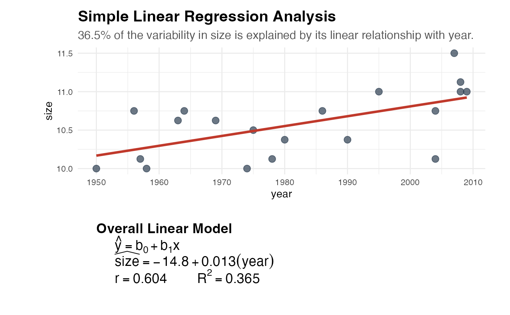

Average dinner plate diameter recorded across different years, from 1950 onward. Used in Chapter 10 of ISI to discuss trends over time and simple linear regression. Plates have gotten larger over the decades – but is the trend statistically significant?
Format
A data frame with 20 rows and 2 variables:
- year
Year of measurement
- size
Average plate diameter (inches)
Examples
head(platesize)
#> # A tibble: 6 × 2
#> year size
#> <dbl> <dbl>
#> 1 1950 10
#> 2 1956 10.8
#> 3 1957 10.1
#> 4 1958 10
#> 5 1963 10.6
#> 6 1964 10.8
explore_2vars(formula = size ~ year, data = platesize, fit_line = TRUE)
#> `geom_smooth()` using formula = 'y ~ x'

test_regression(
formula = size ~ year,
data = platesize,
alternative = "greater",
method = "theory"
)
#> ✔ Regression of "size" ~ "year":
#> • n = 20
#> • Observed Slope (b1) = 0.0128
#> • Standard Error (SE) = 0.004
#>
#> ── Regression Slope Hypothesis Test (Theory) ───────────────────────────────────
#> ℹ Null Hypothesis: beta_1 = 0
#> ℹ Alternative: beta_1 > 0
#> • Sample Size (n): 20
#> • Observed Slope (b1): 0.0128
#> • Standard Error (SE): 0.004
#> • SD of Null Distribution: 0.004
#> • Test Statistic (T): 3.2134
#> • Degrees of Freedom: 18
#> • P-Value: 0.0024
table_regression(formula = size ~ year, data = platesize)
Simple Linear Regression Output
Model: size ~ year
CI Interpretation: We are 95% confident that for every 1 unit increase in year, the true population mean size will increase between 0.0044 and 0.0212 units.